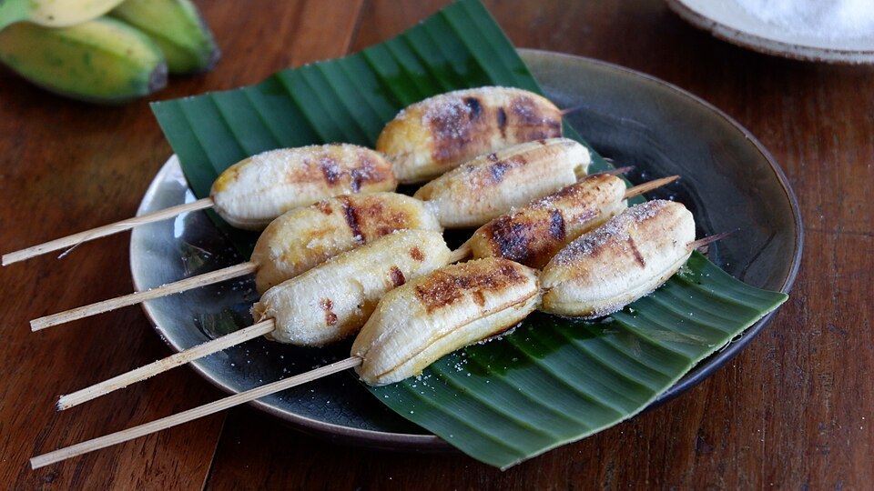

Grilled Bananas
Home

Grilled Bananas
Caramelized grilled bananas with a hint of cinnamon and brown sugar,
topped with whipped cream and a drizzle of chocolate.
Recipe Details
- Prep Time: 5 minutes
- Cook Time: 10 minutes
- Total Time: 15 minutes
- Servings: 4
- Difficulty: Easy
Ingredients
- 4 bananas
- 3 tbsp butter
- 1/4 cup brown sugar
- 1/4 cup powdered cinammon
- 1 tspn vanilla extract
- Whipped cream
- 2 tbsp chocolate sauce
- Pinch of salt
Preparation
Prep
- Peel bananas and slice them in half lengthwise
- Pat dry with paper towels to remove excess moisture
Grilling
- Preheat grill to medium-high heat
- Mix brown sugar and cinnamon in a small bowl
- Brush cut side of bananas with butter
- Sprinkle brown sugar and cinnamon mixture on buttered side
- Place bananas cut-side down on a grill, about 3-4 minutes until caramelized
- Flip and grill another 2-3 minutes on the skin side
Serving
- Transfer grilled bananas to plates
- Top with whipped cream
- Drizzle with chocolate sauce
- Serve immediately while warm
- Enjoy!